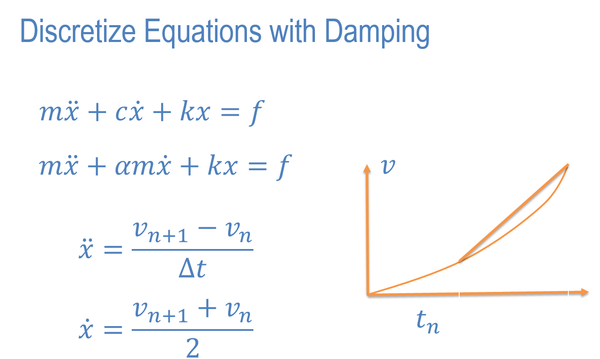
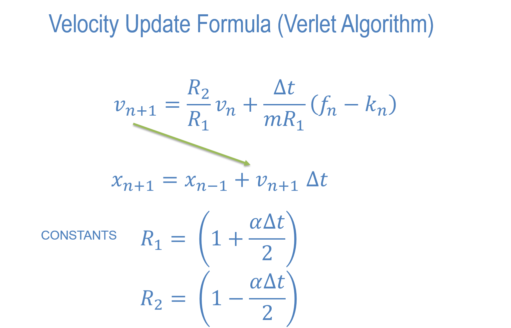
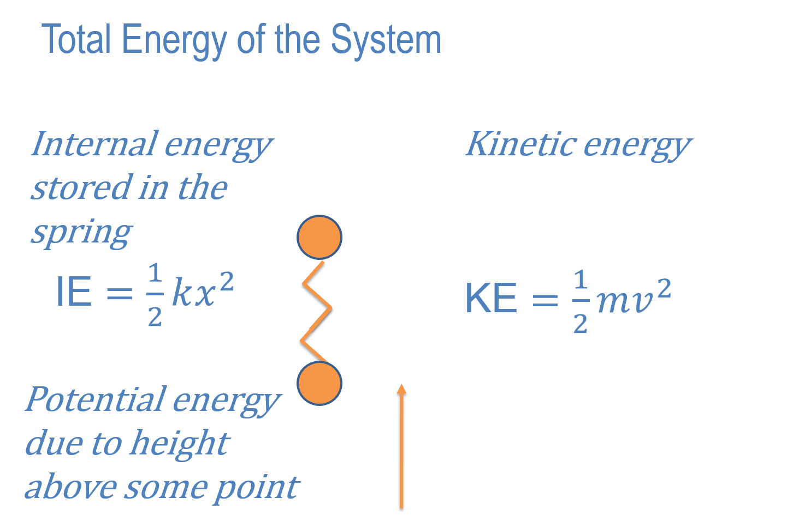

In this lesson we will look at damping. First we will use what is called 'mass damping' because the damping is made proportional to the mass.
Newton's Equations With Damping

Newton's Equations With Damping

Total Energy of a System

Assignment 1. Put the damped equations of motion into 'updateDisplacement()'. Test the code on two masses, one fixed and the other free under gravity. Use alpha = 0.1. Hand in a screen shot of the function updateDisplacement.
Assignment 2. In this we will explore the relationship between kinetic energy, internal energy and potential energy. To do this we will write all of these energies out at every time step. In your code find out where these can be calculated. For the kinetic energy you need the velocity. For the internal energy you need the extension or compression of the spring. For the potential energy you need the height of the mass above some fixed point. Use y = 200 as the fixted height.
Create a fixed mass at y = 100 and a free mass at y = 200. Make gravity -100, mass = 1, springStiffness = 1.
Run1 - no damping. What is the maximum kinetic energy and at what height (y coordinate)? What is the maximum internal energy and at what height?
Assignment 3
Run2 - alpha = 0.1. What is the equilibrium height of the free mass? In Run1 what was the kinetic energy at this height.
Run3 - alpha = 10. What is the equilibrium height of the free mass?
Write the answers in your editor clearly identifying Run1, Run2, Run3 and the quantities you observed.